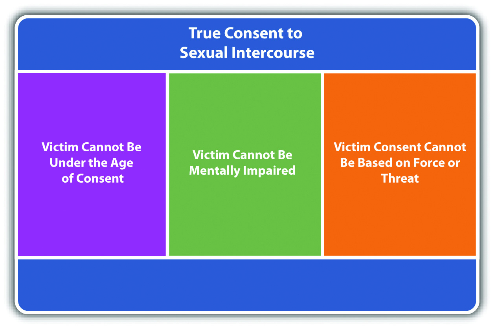
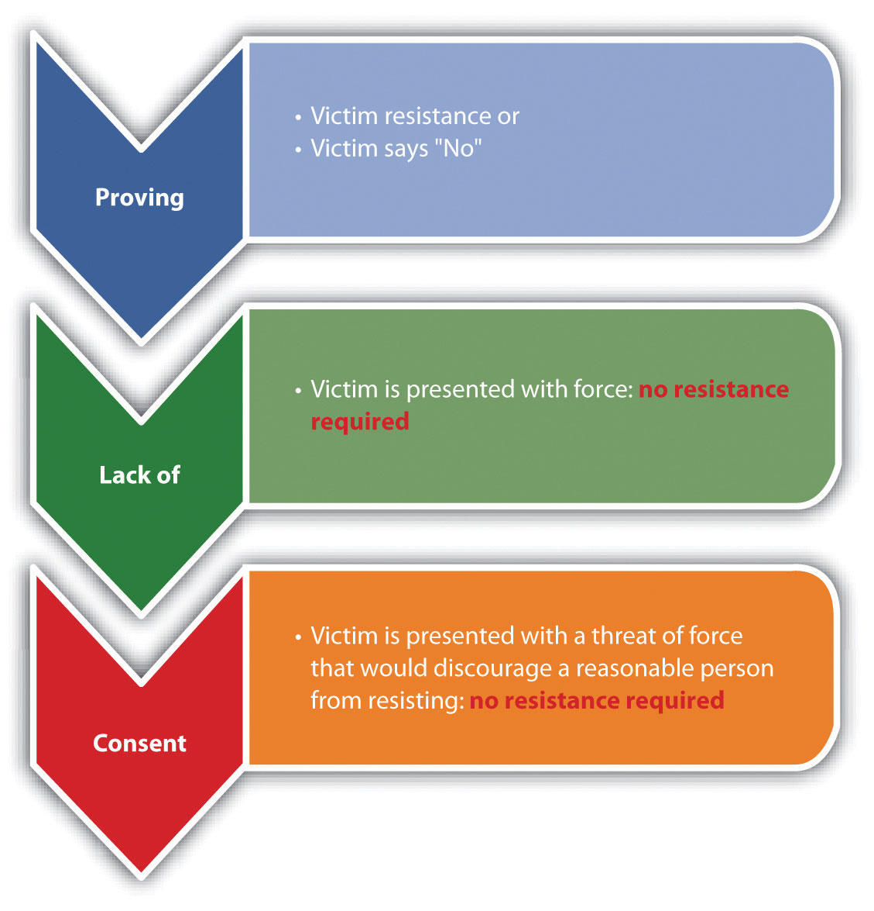
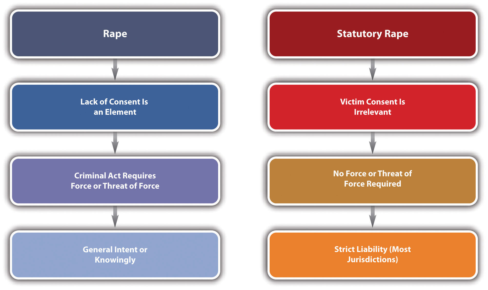
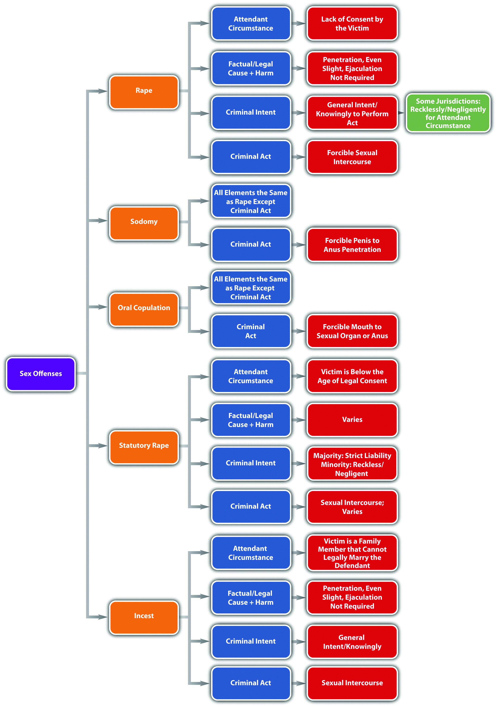
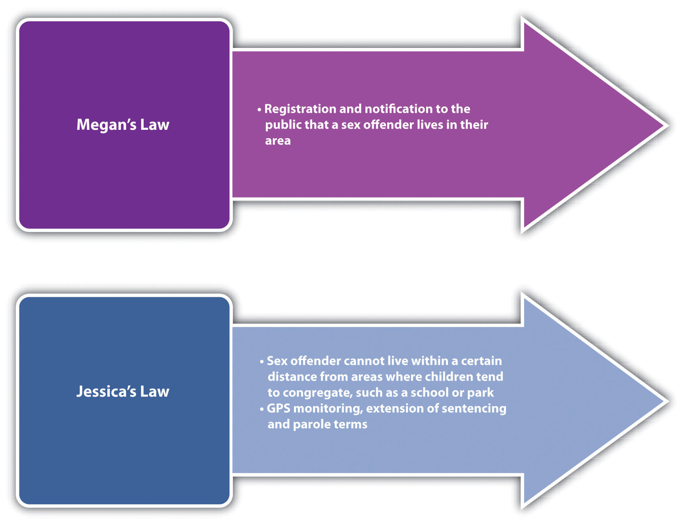

In this section, you learn the elements of rapeThe forcible sexual penetration of a victim without consent. and related sex offenses and examine defenses based on consent. In upcoming sections, you analyze the elements of other crimes involving force, fear, and physical restraint, including assault, battery, domestic violence, stalking, and kidnapping.
The word rape has its roots in the Latin word rapere, which means to steal or seize. At early common law, rape was a capital offense. The elements of rape were forcible sexual intercourse, by a man, with a woman not the spouse of the perpetrator, conducted without consent, or with consent obtained by force or threat of force.Donna Macnamara, “History of Sexual Violence,” Interactive theatre.org website, accessed February 8, 2011, http://www.interactivetheatre.org/resc/history.html. The rape prosecution required evidence of the defendant’s use of force, extreme resistance by the victim, and evidence that corroborated the rape victim’s testimony. The common law also recognized the crime of sodomy. In general, sodomy was the penetration of the male anus by a man. Sodomy was condemned and criminalized even with consent because of religious beliefs deeming it a crime against nature.“Sex Offenses,” Lawbrain.com website, accessed February 8, 2011, http://lawbrain.com/wiki/Sex_Offenses.
In the 1970s, many changes were made to rape statutes, updating the antiquated common-law approach and increasing the chances of conviction. The most prominent changes were eliminating the marital rape exemption and the requirement of evidence to corroborate the rape victim’s testimony, creating rape shield laws to protect the victim, and relaxing the necessity for the defendant’s use of force or resistance by the victim.Matthew R. Lyon, “No means No? Withdrawal of Consent During Intercourse and the Continuing Evolution of the Definition of Rape,” Findarticles.com website, accessed February 8, 2011, http://findarticles.com/p/articles/mi_hb6700/is_1_95/ai_n29148498/pg_3/?tag=content;col1. Many jurisdictions also changed the name of rape to sexual battery, sexual assault, or unlawful sexual conduct and combined sexual offenses like rape, sodomy, and oral copulation into one statute. Although some states still have statutes that provide the death penalty for rape, the US Supreme Court has held that rape, even child rape, cannot be considered a capital offense without violating the Eighth Amendment cruel and unusual punishment clause, rendering these statutes unenforceable.Kennedy v. Louisiana, 128 S. Ct. 2641 (2008), accessed February 8, 2011, http://www.oyez.org/cases/2000-2009/2007/2007_07_343.
Sodomy law has likewise been updated to make sodomy a gender-neutral offense and preclude the criminalization of consensual sexual conduct between adults. The US Supreme Court has definitively held that consensual sex between adults may be protected by a right of privacy and cannot be criminalized without a sufficient government interest.Lawrence v. Texas, 539 U.S. 558 (2003), accessed February 8, 2011, http://www.oyez.org/cases/2000-2009/2002/2002_02_102.
Table 10.1 Comparing Common Law Rape and Sodomy with Modern Statutes
| Crime | Criminal Act | Lack of Victim Consent? | Victim Resistance? | Other Differences |
|---|---|---|---|---|
| Common-law rape | Penis-vagina penetration | Yes | Yes, extreme resistance | Corroborative evidence required; no spousal rape; capital crime |
| Modern rape | Some states include any sexual penetration | Yes | Not if force is used, or threat of force that would deter a reasonable person from resisting (See section 10.1.2.2.2.) | No corroborative evidence required; spousal rape is a crime in some jurisdictions; rape is not a capital crime. |
| Common-law sodomy | Male penis-male anus penetration | No. Even consensual sodomy was criminal. | No. Even consensual sodomy was criminal. | |
| Modern sodomy | Gender-neutral penis-anus penetration | Yes | Same as modern rape, above | Consensual sodomy in prison or jail is still criminal in some jurisdictions. (See section 10.1.7.) |
In modern times, rape is a crime that has the elements of criminal act, criminal intent, causation, and harm. Rape also has an attendant circumstance element, which is lack of consent by the victim.
The criminal act element required for rape in many states is sexual intercourse, accomplished by force or threat of force.Md. Code Ann. § 3-303, accessed February 8, 2011, http://law.justia.com/maryland/codes/2005/gcr/3-303.html. Sexual intercourse is typically defined as penetration of a woman’s vagina by a man’s penis and can also be referred to as vaginal intercourse.Md. Code Ann. § 3-301(g), accessed February 8, 2011, http://law.justia.com/maryland/codes/2005/gcr/3-301.html. Some jurisdictions include the penetration of the woman’s vagina by other body parts, like a finger, as sexual intercourse.K.S.A. § 21-3501(1), accessed February 8, 2011, http://law.justia.com/kansas/codes/2006/chapter21/statute_11553.html. The Model Penal Code defines the criminal act element required for rape as sexual intercourse that includes “intercourse per os or per anum,” meaning oral and anal intercourse (Model Penal Code § 213.0(2)). In most jurisdictions, a man or a woman can commit rape.K.S.A. § 21-3502, accessed February 8, 2011, http://law.justia.com/kansas/codes/2006/chapter21/statute_11554.html.
Although it is common to include force or threat of force as an indispensible part of the rape criminal act, some modern statutes expand the crime of rape to include situations where the defendant does not use force or threat, but the victim is extremely vulnerable, such as an intoxicated victim, an unconscious victim, or a victim who is of tender years.K.S.A. § 21-3502, accessed February 8, 2011, http://law.justia.com/kansas/codes/2006/chapter21/statute_11554.html. The Model Penal Code includes force, threat of force, and situations where the defendant has impaired the victim’s power to control conduct by administering intoxicants or drugs without the victim’s knowledge or sexual intercourse with an unconscious female or a female who is fewer than ten years old (Model Penal Code § 213.1(1)). Other statutes may criminalize unforced nonconsensual sexual intercourse or other forms of unforced nonconsensual sexual contact as less serious forms of rape with reduced sentencing options.N.Y. Penal Law § 130.25(3), accessed February 10, 2011, http://law.onecle.com/new-york/penal/PEN0130.25_130.25.html.
Alex and Brad play video games while Brad’s sister Brandy watches. Brad tells Alex he is going to go the store and purchase some beer. While Brad is gone, Alex turns to Brandy, pulls a knife out of his pocket, and tells her to take off her pants and lie down. Brandy tells Alex, “No, I don’t want to,” but thereafter acquiesces, and Alex puts his penis into Brandy’s vagina. Alex has probably committed the criminal act element required for rape in most jurisdictions. Although Alex did not use physical force to accomplish sexual intercourse, his threat of force by display of the knife is sufficient. If the situation is reversed, and Brandy pulls out the knife and orders Alex to put his penis in her vagina, many jurisdictions would also criminalize Brandy’s criminal act as rape. If Alex does not use force or a threat of force, but Brandy is only nine years old, some jurisdictions still criminalize Alex’s act as rape, as would the Model Penal Code.
In many jurisdictions, the attendant circumstance element required for rape is the victim’s lack of consent to the defendant’s act.Md. Code Ann. § 3-304, accessed February 8, 2011, http://law.justia.com/maryland/codes/gcr/3-304.html. Thus victim’s consent could operate as a failure of proof or affirmative defense.
Proving lack of consent has two components. First, the victim must be legally capable of giving consent. If the victim is under the age of consent or is mentally or intellectually impaired because of a permanent condition, intoxication, or drugs, the prosecution does not have to prove lack of consent in many jurisdictions.K.S.A. § 21-3502, accessed February 8, 2011, http://law.justia.com/kansas/codes/2006/chapter21/statute_11554.html. Sexual intercourse with a victim under the age of consent is a separate crime, statutory rape, which is discussed shortly.
The second component to proving lack of consent is separating true consent from consent rendered involuntarily. Involuntary consent is present in two situations. First, if the victim consents to the defendant’s act because of fraud or trickery—for example, when the victim is unaware of the nature of the act of sexual intercourse—the consent is involuntary. A victim is generally unaware of the nature of the act of sexual intercourse when a doctor shams a medical procedure.Iowa v. Vander Esch, 662 N.W. 2d 689 (2002), accessed February 10, 2011, http://scholar.google.com/scholar_case?case=4906781834239023314&q= rape+%22fraud+in+the+inducement%22&hl=en&as_sdt=2,5&as_ylo=2002. This is called fraud in the factumThe defendant fraudulently conceals the nature of the sexual act, like a doctor shamming a medical procedure. Fraud in the factum could render the victim’s consent involuntary.. Fraud in the inducementThe defendant fraudulently conceals the circumstances of the sexual act, like fraudulently representing that the sexual act will cure a disease. Fraud in the inducement does not render the victim’s consent involuntary., which is a fraudulent representation as to the circumstances accompanying the sexual conduct, does not render the consent involuntary in many jurisdictions. An example of fraud in the inducement is a defendant’s false statement that the sexual intercourse will cure a medical condition.Boro v. Superior Court, 163 Cal. App. 3d 1224 (1985), accessed February 17, 2011, http://scholar.google.com/scholar_case?case=8450241145233624189&q= Boro+v.+Superior+Court&hl=en&as_sdt=2,5.
A more common example of involuntary consent is when the victim consents to the defendant’s act because of force or threat of force. The prosecution generally proves this type of consent is involuntary by introducing evidence of the victim’s resistance.
Figure 10.1 Diagram of Consent
Under the common law, the victim had to manifest extreme resistance to indicate lack of consent. In modern times, the victim does not have to fight back or otherwise endanger his or her life if it would be futile to do so. In most jurisdictions, the victim only needs to resist to the same extent as a reasonable person under similar circumstances, which is an objective standard.Del. Code Ann. tit. II, § 761(j) (1), accessed February 9, 2011, http://delcode.delaware.gov/title11/c005/sc02/index.shtml#761.
The use of force by the defendant could eliminate any requirement of victim resistance to prove lack of consent.N.Y. Penal Law § 130.05, accessed February 9, 2011, http://law.onecle.com/new-york/penal/PEN0130.05_130.05.html. If the defendant obtains consent using a threat of force, rather than force, the victim may not have to resist if the victim experiences subjective fear of serious bodily injury, and a reasonable person under similar circumstances would not resist, which is an objective standard.Minn. Stat. Ann. § 609.343(c), accessed February 10, 2011, https://www.revisor.mn.gov/statutes/?id=609.343. Threat of force can be accomplished by words, weapons, or gestures. It can also be present when there is a discrepancy in size or age between the defendant and the victim or if the sexual encounter takes place in an isolated location. The Model Penal Code considers it a felony of the third degree and gross sexual imposition when a male has sexual intercourse with a female not his wife by compelling “her to submit by any threat that would prevent resistance by a woman of ordinary resolution” (Model Penal Code § 213.1(2)(a)). Note that the Model Penal Code’s position does not require the threat to be a threat of force; it can be any type of threat that prevents physical resistance.
If the victim does not physically resist the criminal act, the prosecution must prove that the victim affirmatively indicated lack of consent in some other manner. This could be a verbal response, such as saying, “No,” but the verbal response must be unequivocal. In the most extreme case, at least one court has held that a verbal “No” during the act of sexual intercourse is sufficient, and the defendant who continues with sexual intercourse after being told “No” is committing the criminal act of rape.In re John Z., 29 Cal. 4th 756 (2003), accessed February 10, 2011, http://scocal.stanford.edu/opinion/re-john-z-32309.
Figure 10.2 Proving Lack of Consent
At early common law, a victim’s testimony was insufficient evidence to meet the burden of proving the elements of rape, including lack of consent. The victim’s testimony had to be supported by additional corroborative evidenceEvidence that tends to support a victim’s testimony.. Modern jurisdictions have done away with the corroborative evidence requirement and allow the trier of fact to determine the elements of rape or lack of consent based on the victim’s testimony alone.State v. Borthwick, 880 P.2d 1261 (1994), accessed February 10, 2011, http://www1.law.umkc.edu/suni/CrimLaw/calendar/Class_24_borthwick_case.htm. However, statistics indicate that rape prosecutions often result in acquittal. Thus although technically the victim’s testimony need not be corroborated, it is paramount that the victim promptly report the rape to the appropriate authorities and submit to testing and interrogation to preserve any and all forms of relevant rape evidence.
Review the example with Brandy and Alex in Section 10 "Example of Rape Act". In this example, after an initial protest, Brandy lies down, takes off her pants, and allows Alex to put his penis in her vagina when he pulls out a knife. It is likely that the trier of fact will find the rape attendant circumstance in this case. Although Brandy acquiesced to Alex’s demands without resisting, she did so after Alex took a knife out of his pocket, which is a threat of force. In addition, Brandy expressed her lack of consent verbally before submitting to Alex’s demand. A trier of fact could determine that Brandy experienced a fear of serious bodily injury from Alex’s display of the knife, and that a reasonable person under similar circumstances would give in to Alex’s demands without physical resistance.
Change this example and assume that after Brad leaves, Alex asks Brandy to have sexual intercourse with him. Brandy responds, “No,” but allows Alex to remove her pants and put his penis in her vagina without physically resisting. The trier of fact must make the determination of whether Alex accomplished the sexual act by force or threat of force and without Brandy’s consent. If Brandy testifies that she said “No” and did not consent to Alex’s act, and Alex testifies that Brandy’s verbal response was insufficient to indicate lack of consent, the trier of fact must resolve this issue of fact, and it can do so based on Brandy’s testimony, uncorroborated, in many jurisdictions. The trier of fact can use the criteria of the difference in age and size between Brandy and Alex, any gestures or words indicating force or threat, and the location and isolation of the incident, among other factors.
The criminal intent element required for rape in most jurisdictions is the general intent or knowingly to perform the rape criminal act.State v. Lile, 699 P.2d 456 (1985), accessed February 8, 2011, http://scholar.google.com/scholar_case?case=5958820374035014869&hl=en&as_sdt=2&as_vis=1&oi=scholarr. This may include the intent to use force to accomplish the objective if the state’s rape statute includes force or threat of force as a component of the criminal act.
As Chapter 4 "The Elements of a Crime" stated, occasionally, a different criminal intent supports the other elements of an offense. In some states, negligent intent supports the rape attendant circumstance of lack of victim consent. This creates a viable mistake of fact defense if the defendant has an incorrect perception as to the victim’s consent. To be successful with this defense, the facts must indicate that the defendant honestly and reasonably believed that the victim consented to the rape criminal act.People v. Mayberry, 542 P.2d 1337 (1975), accessed February 11, 2011, http://scholar.google.com/scholar_case?case=6471351898025391619&hl=en&as_sdt=2&as_vis=1&oi=scholarr. Many jurisdictions expressly disallow the defense, requiring strict liability intent for the lack of consent attendant circumstance.State v. Plunkett, 934 P.2d 113 (1997), accessed February 11, 2011, http://scholar.google.com/scholar_case?case=17940293485668190575&hl=en&as_sdt=2&as_vis=1&oi=scholarr.
Review the example with Alex and Brandy in Section 10 "Example of Rape Act". Change the example so that Alex does not display a knife and simply asks Brandy if she would like to have sex with him. Brandy does not respond. Alex walks over to Brandy and removes her pants. Brandy does not protest or physically resist. Thereafter, Alex asks Brandy if she “likes it rough.” Brandy remains silent. Alex physically and forcibly puts his penis in Brandy’s vagina. In states that allow a negligent intent to support the attendant circumstance of rape, Alex may be able to successfully assert mistake of fact as a defense. It appears that Alex has with general intent or knowingly committed forcible sexual intercourse, based on his actions. In most jurisdictions, the jury could be instructed on an inference of this intent from Alex’s behavior under the circumstances. However, if negligent intent is required to support the attendant circumstance of the victim’s lack of consent, the trier of fact may find that Alex’s mistake as to Brandy’s consent was honest and reasonable, based on her lack of response or physical resistance. If Alex is in a jurisdiction that requires strict liability intent to support the attendant circumstance element, Alex cannot raise the defense because Alex’s belief as to Brandy’s consent would be irrelevant.
The defendant’s criminal act must be the factual and legal cause of the harm, which is defined in Section 10 "Rape Harm".
The harm element of rape in most jurisdictions is penetration, no matter how slight.Idaho Code Ann. § 18-6101, accessed February 10, 2011, http://www.legislature.idaho.gov/idstat/Title18/T18CH61SECT18-6101.htm. This precludes virginity as a defense. In addition, modern statutes do not require male ejaculation, which precludes lack of semen as a defense.Ala. Code § 13A-6-60, accessed February 11, 2011, http://law.justia.com/alabama/codes/2009/Title13A/Chapter6/13A-6-60.html.
Review the example with Alex and Brandy in Section 10 "Example of Rape Act". Assume that Brad walks into the room while Alex and Brandy are engaging in sexual intercourse. Brad tackles Alex and pulls him off Brandy. Alex may be charged with rape, not attempted rape, in most jurisdictions. The fact that Alex did not ejaculate does not affect the rape analysis in any way because most jurisdictions do not require ejaculation as a component of the harm element of rape.
Rape prosecutions can be extremely stressful for the victim, especially when the defendant pursues a consent defense. Before the comprehensive rape reforms of the 1970s, rape defendants would proffer any evidence they could find to indicate that the victim was sexually promiscuous and prone to consenting to sexual intercourse. Fearing humiliation, many rape victims kept their rape a secret, not reporting it to law enforcement. This allowed serial rapists to escape punishment and did not serve our criminal justice goal of deterrence.
In modern times, most states protect rape victims with rape shield lawsStatutes that preclude the admission of evidence in a rape trial of a victim’s previous sexual history unless a judge permits it after a pretrial in camera hearing.. Rape shield laws prohibit the admission of evidence of the victim’s past sexual conduct to prove consent in a rape trial, unless the judge allows it in a pretrial in cameraOutside the presence of the jury. hearing, outside the presence of the jury. Rape shield laws could include the additional protections of the exclusion of evidence relating to the victim’s style of dress to prove consent, the exclusion of evidence that the victim requested the defendant to wear a condom to prove consent, and the affirmation that a victim’s testimony in a rape trial need not be corroborated by other evidence.Fla. Stat. Ann. § 794.022, accessed February 11, 2011, http://law.justia.com/florida/codes/2010/TitleXLVI/chapter794/794_022.html. Most courts permit the admission of evidence proving the victim’s previous consensual sex with the defendant because this evidence is particularly relevant to any consent defense.Colo. Rev. Stat. Ann. § 18-3-407(1) (a), accessed February 14, 2011, http://www.michie.com/colorado/lpext.dll?f=templates&fn=main-h.htm&cp=.
Review the example with Alex and Brandy in Section 10 "Example of Rape Intent". Assume that the jurisdiction in which the example takes place has a rape shield law. If Alex is put on trial for the rape of Brandy and he decides to pursue a consent defense, Alex would not be able to introduce evidence of Brandy’s sexual history with other men unless he receives approval from a judge in an in camera hearing before the trial.
Should the Media Be Permitted to Publish Negative Information about a Rape Victim?
In 2003, Kobe Bryant, a professional basketball player, was indicted for sexually assaulting a nineteen-year-old hotel desk clerk. A mistake by a court reporter listed the accuser’s name on a court website.“Rape Case against Bryant Dismissed,” MSNBC.com website, accessed February 27, 2011, http://nbcsports.msnbc.com/id/5861379. The court removed the victim’s name after discovery of the mistake, but the damage was done. Thereafter, in spite of a court order prohibiting the publication of the accuser’s name, the media, including radio, newspaper, Internet, and television, published the accuser’s name, phone number, address, and e-mail address.Tom Kenworty, Patrick O’Driscoll, “Judge Dismisses Bryant Rape Case,” USAtoday.com website, accessed February 27, 2011, http://www.usatoday.com/sports/basketball/nba/2004-09-01-kobe-bryant-case_x.htm. Products like underwear, t-shirts, and coffee mugs with pictures of the accuser and Bryant in sexual positions were widely available for sale, and the accuser received constant harassment, including death threats.Richard Haddad, “Shield or Sieve? People v. Bryant and the Rape Shield Law in High-Profile Cases,” Columbia Journal of Law and Social Problems, accessed February 27, 2011, http://www.columbia.edu/cu/jlsp/pdf/Spring2%202006/Haddad10.pdf. Although the Colorado Supreme Court ordered pretrial in camera transcripts of hearings pursuant to Colorado’s rape shield law to remain confidential, an order that was confirmed by the US Supreme Court,Associated Press et. al. v. District Court for the Fifth Judicial District of Colorado, 542 U.S. 1301 (2004), accessed February 27, 2011, http://ftp.resource.org/courts.gov/c/US/542/542.US.1301.04.73.html. the accuser was subjected to so much negative publicity that she eventually refused to cooperate and the prosecution dropped the charges in 2004.
Check your answer using the answer key at the end of the chapter.
Kobe Claims Innocence to Sexual Assault Charges
Kobe Bryant and his attorney discuss the charge of rape filed against Kobe in this video:
In modern times, rape defendants are frequently known to the victim, which may change the factual situation significantly from stranger rape. Acquaintance rapeThe victim is raped by an acquaintance. Also called date rape., also called date rape, is a phenomenon that could increase a victim’s reluctance to report the crime and could also affect the defendant’s need to use force and the victim’s propensity to physically resist.The National Center for Victims of Crime, “Acquaintance Rape,” Ncvc.org website, accessed February 14, 2011, http://www.ncvc.org/ncvc/main.aspx?dbName=DocumentViewer&DocumentID=32306. Although studies indicate that acquaintance rape is on the rise,The National Center for Victims of Crime, “Acquaintance Rape,” Ncvc.org website, accessed February 14, 2011, http://www.ncvc.org/ncvc/main.aspx?dbName=DocumentViewer&DocumentID=32306. statutes have not entirely addressed the issues presented in an acquaintance rape fact pattern. To adequately punish and deter acquaintance or date rape, rape statutes should punish nonforcible, nonconsensual sexual conduct as severely as forcible rape. Although the majority of states still require forcible sexual intercourse as the rape criminal act element, at least one modern court has rejected the necessity of any force other than what is required to accomplish the sexual intercourse.State of New Jersey in the Interest of M.T.S., 609 A.2d 1266 (1992), accessed February 14, 2011, http://www.4lawnotes.com/showthread.php?t=1886. Some rape statutes have also eliminated the requirement that the defendant use force and punish any sexual intercourse without consent as rape.Utah Code Ann. § 76-5-402(1), accessed February 14, 2011, http://le.utah.gov/~code/TITLE76/htm/76_05_040200.htm.
As stated previously, at early common law, a man could not rape his spouse. The policy supporting this exemption can be traced to a famous seventeenth-century jurist, Matthew Hale, who wrote, “[T]he husband cannot be guilty of a rape committed by himself upon his lawful wife, for by their mutual matrimonial consent and contract the wife hath given up herself in this kind unto her husband, which she cannot retract” (Hale, History of Pleas of the Crown, p. 629). During the rape reforms of the 1970s, many states eliminated the marital or spousal rapeThe victim of rape is the defendant’s spouse. exemption, in spite of the fact that the Model Penal Code does not recognize spousal rape. At least one court has held that the spousal rape exemption violates the equal protection clause of the Fourteenth Amendment because it discriminates against single men without a sufficient government interest.People v. Liberta, 64 N.Y. 2d 152 (1984), accessed February 14, 2011, http://scholar.google.com/scholar_case?case=1399209540378549726&hl=en&as_sdt=2&as_vis=1&oi=scholarr. In several states that criminalize spousal rape, the criminal act, criminal intent, attendant circumstance, causation, and harm elements are exactly the same as the elements of forcible rape.N. H. Rev. Stat. Ann. § 632-A: 5, accessed February 14, 2011, http://www.gencourt.state.nh.us/rsa/html/LXII/632-A/632-A-5.htm. Many states also grade spousal rape the same as forcible rape—as a serious felony.Utah Code Ann. § 76-5-402(2), accessed February 14, 2011, http://le.utah.gov/~code/TITLE76/htm/76_05_040200.htm. Grading of sex offenses is discussed shortly.
Statutory rapeSexual intercourse with a victim younger than the age of legal consent., also called unlawful sexual intercourse, criminalizes sexual intercourse with a victim who is under the age of legal consent. The age of legal consent varies from state to state and is most commonly sixteen, seventeen, or eighteen.Age of Consent Chart for the U.S.-2010, Ageofconsent.us website, accessed February 14, 2011, http://www.ageofconsent.us.
The criminal act element required for statutory rape in many jurisdictions is sexual intercourse, although other types of sexual conduct with a victim below the age of consent are also criminal.US Department of Health and Human Services, “Statutory Rape: A Guide to State Laws and Reporting Requirements,” ASPE.hhs.gov website, accessed February 16, 2011, http://aspe.hhs.gov/hsp/08/SR/StateLaws/statelaws.shtml. The harm element of statutory rape also varies, although many jurisdictions mirror the harm element required for rape.US Department of Health and Human Services, “Statutory Rape: A Guide to State Laws and Reporting Requirements,” ASPE.hhs.gov website, accessed February 16, 2011, http://aspe.hhs.gov/hsp/08/SR/StateLaws/statelaws.shtml. The attendant circumstance element required for statutory rape is an underage victim.Cal. Penal Code § 261.5, accessed February 15, 2011, http://law.onecle.com/california/penal/261.5.html. There is no requirement for force by the defendant. Nor is there an attendant circumstance element of lack of consent because the victim is incapable of legally consenting.
In the majority of states, the criminal intent element of statutory rape is strict liability.La. Rev. Stat. Ann. § 14-80, accessed February 15, 2011, http://law.justia.com/louisiana/codes/2009/rs/title14/rs14-80.html. However, a minority of states require reckless or negligent criminal intent, allowing for the defense of mistake of fact as to the victim’s age. If the jurisdiction recognizes mistake of age as a defense, the mistake must be made reasonably, and the defendant must take reasonable measures to verify the victim’s age.Alaska Stat. § 11.41.445(b), accessed February 15, 2011, http://law.justia.com/alaska/codes/2009/title-11/chapter-11-41/article-04/sec-11-41-445. The mistake of age defense can be proven by evidence of a falsified identification, witness testimony that the victim lied about his or her age to the defendant, or even the appearance of the victim.
It is much more common to prosecute males for statutory rape than females. The historical reason for this selective prosecution is the policy of preventing teenage pregnancy.Michael M. v. Superior Court, 450 U.S. 464 (1981), accessed February 15, 2011, http://www.oyez.org/cases/1980-1989/1980/1980_79_1344. However, modern statutory rape statutes are gender-neutral.N.Y. Penal Law § 130.30, accessed February 15, 2011, http://law.onecle.com/new-york/penal/PEN0130.30_130.30.html. This ensures that women, especially women who are older than their sexual partner, are equally subject to prosecution.
Gary meets Michelle in a nightclub that only allows entrance to patrons eighteen and over. Gary and Michelle end up spending the evening together, and later they go to Gary’s apartment where they have consensual sexual intercourse. In reality, Michelle is actually fifteen and was using false identification to enter the nightclub. If Gary and Michelle are in a state that requires strict liability for the criminal intent element of statutory rape, Gary can be subject to prosecution for and conviction of this offense if fifteen is under the age of legal consent. If Gary and Michelle are in a state that allows for mistake of age as a defense, Gary could use Michelle’s presence in the nightclub as evidence that he acted reasonably in believing that Michelle was capable of rendering legal consent. If both Gary and Michelle used false identification to enter the nightclub, and both Gary and Michelle are under the age of legal consent, both could be prosecuted for and convicted of statutory rape in most jurisdictions because modern statutory rape statutes are gender-neutral.
Figure 10.3 Comparison of Rape and Statutory Rape
As stated previously, some states include rape, sodomyForcible, nonconsensual, penis to anus penetration., and oral copulationForcible, nonconsensual, mouth to sexual organ or anus penetration. in a sexual assault or sexual conduct statute that criminalizes a variety of sexual acts involving penetration.Alaska Stat. § 11.41.410, accessed February 15, 2011, http://law.justia.com/alaska/codes/2009/title-11/chapter-11-41/article-04/sec-11-41-410. In states that distinguish between rape and sodomy, the criminal act element of sodomy is often defined as forcible penis to anus penetration.Cal. Penal Code § 286(a), accessed February 15, 2011, http://law.justia.com/california/codes/2009/pen/281-289.6.html. Typically, the other sodomy elements, including the lack of consent attendant circumstance, criminal intent, causation, and harm, are the same as the elements of rape. Many jurisdictions also grade sodomy the same as rape. Grading is discussed shortly.
Sodomy that is nonforcible but committed with an individual below the age of legal consent is also criminal.Cal. Penal Code § 286(b), accessed February 15, 2011, http://law.justia.com/california/codes/2009/pen/281-289.6.html. As stated previously, the US Supreme Court has held that statutes criminalizing sodomy between consenting adults unreasonably encroach on a right to privacy without a sufficient government interest.Lawrence v. Texas, 539 U.S. 558 (2003), accessed February 15, 2011, http://www.oyez.org/cases/2000-2009/2002/2002_02_102. In some states, consensual nonforcible sodomy is criminal if it is committed in a state penitentiary or local detention facility or jail.Cal. Penal Code § 286(c) (3) (e), accessed February 15, 2011, http://law.justia.com/california/codes/2009/pen/281-289.6.html.
In states that distinguish between rape, sodomy, and oral copulation, the criminal act element of oral copulation is forcible mouth to sexual organ or anus penetration.Cal. Penal Code § 288a, accessed February 15, 2011, http://law.onecle.com/california/penal/288a.html. Typically, the other oral copulation elements, including the lack of consent attendant circumstance, criminal intent, causation, and harm, are the same as the elements of rape. Many jurisdictions also grade oral copulation the same as rape. Grading is discussed shortly.
A few states still criminalize oral copulation with consent.Ala. Code § 13A-6-65, accessed February 15, 2011, http://www.legislature.state.al.us/CodeofAlabama/1975/13A-6-65.htm. Based on the US Supreme Court precedent relating to sodomy, these statutes may be unenforceable and unconstitutional.
IncestSexual intercourse with a victim who the defendant cannot legally marry because of a family relationship. is also criminal in many jurisdictions. The criminal act element required for incest is typically sexual intercourse.Fla. Stat. Ann. § 826.04, accessed February 15, 2011, http://law.onecle.com/florida/crimes/826.04.html. The attendant circumstance element required for incest is a victim the defendant cannot legally marry because of a family relationship.Del. Code Ann. Tit. 11, § 766, accessed February 15, 2011, http://law.justia.com/delaware/codes/2010/title11/c005-sc02.html. In the majority of jurisdictions, force is not required, and consent is not an attendant circumstance element of incest.Del. Code Ann. Tit. 11, § 766, accessed February 15, 2011, http://law.justia.com/delaware/codes/2010/title11/c005-sc02.html. Thus consent by the victim cannot operate as a defense. If the sexual intercourse with a family member is forcible and nonconsensual, the defendant could be charged with and convicted of rape. The criminal intent element required for incest is typically general intent or knowingly.Fla. Stat. Ann. § 826.04, accessed February 15, 2011, http://law.onecle.com/florida/crimes/826.04.html. The causation and harm elements of incest are generally the same as the causation and harm elements of rape.Fla. Stat. Ann. § 826.04, accessed February 15, 2011, http://law.onecle.com/florida/crimes/826.04.html. However, incest is generally graded lower than forcible rape or sexual assault because force and lack of consent are not required.Del. Code Ann. Tit. 11, § 766, accessed February 15, 2011, http://law.justia.com/delaware/codes/2010/title11/c005-sc02.html.
Hal and Harriet, brother and sister, have consensual sexual intercourse. Both Hal and Harriet are above the age of legal consent. In spite of the fact that there was no force, threat of force, or fraud, and both parties consented to the sexual act, Hal and Harriet could be charged with and convicted of incest in many jurisdictions, based on their family relationship.
Jurisdictions vary when it comes to grading sex offenses. In general, forcible sex crimes involving penetration are graded as serious felonies. Factors that could aggravate grading are gang rape,Fla. Stat. Ann. § 794.023, accessed February 15, 2011, http://law.onecle.com/florida/crimes/794.023.html. the infliction of bodily injury, the use of a weapon, a youthful victim, the commission of other crimes in concert with the sexual offense, or a victim who has mental or intellectual disabilities or who has been compromised by intoxicants.Del. Code Ann. Tit. 11, § 773, accessed February 15, 2011, http://law.justia.com/delaware/codes/2010/title11/c005-sc02.html. The Model Penal Code grades rape as a felony of the second degree unless the actor inflicts serious bodily injury on the victim or another, or the defendant is a stranger to the victim, in which case the grading is elevated to a felony of the first degree (Model Penal Code § 213.1 (1)).
Sexual offenses that do not include penetration are graded lower,N.Y. Penal Law § 130.52, accessed February 15, 2011, http://law.onecle.com/new-york/penal/PEN0130.52_130.52.html. along with offenses that could be consensual.Del. Code Ann. Tit. 11, § 766, accessed February 15, 2011, http://law.justia.com/delaware/codes/2010/title11/c005-sc02.html. Sex offense statutes that criminalize sexual conduct with a victim below the age of legal consent often grade the offense more severely when there is a large age difference between the defendant and the victim, when the defendant is an adult, or the victim is of tender years.Cal. Penal Code § 261.5, accessed February 15, 2011, http://law.onecle.com/california/penal/261.5.html.
Figure 10.4 Diagram of Sex Offenses
Based on a public awareness that sex offenders often reoffend, many states have enacted some form of Megan’s lawA statute requiring sex offender registration and notification to the public of the location of a sex offender. or Jessica’s lawA statute requiring monitoring of a sex offender., which provide for registration, monitoring, control, and elevated sentencing for sex offenders, including those that harm children. Both laws were written and enacted after high-profile cases with child victims became the subject of enormous media attention. Megan’s and Jessica’s law statutes enhance previously enacted statutes that require the registration of sex offenders with local law enforcement agencies.
Typically, a Megan’s law statute provides for registration and notification to the public that a convicted sex offender lives in their area.42 Pa. C. S. § 9799.1, accessed February 15, 2011, http://www.pameganslaw.state.pa.us. A Jessica’s law statute often includes a stay-away order, mandating that a sex offender cannot live within a certain distance from areas such as a school or park where children tend to congregate. Jessica’s law statutes also provide for GPS monitoring and extend the sentencing and parole terms of child sex offenders.Va. Code Ann. § 19.2-295.2:1, accessed February 15, 2011, http://leg1.state.va.us/cgi-bin/legp504.exe?000+cod+19.2-295.2C1.
Figure 10.5 Diagram of Megan’s and Jessica’s Law Statutes
Answer the following questions. Check your answers using the answer key at the end of the chapter.